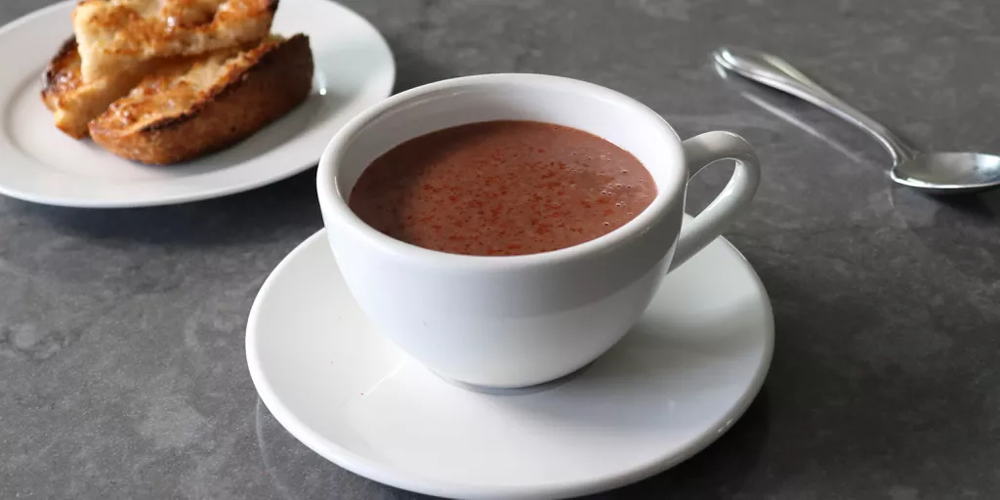

Home
Spanish-Style Hot Chocolate

Description
This rich and decadent version of hot chocolate has a silky texture and hint of spice from the garnish of cayenne
pepper.
Ingredients
- 4 ounces dark chocolate (70% cacao), broken or cut into 1/2-inch pieces
- 2 1/4 cups whole milk
- 2 teaspoons white sugar, or to taste
- 1 pinch of salt
- 1/2 teaspoon cornstarch
- cayenne pepper to garnish top
Steps
- Break up chocolate into small pieces and set aside.
- Add milk, sugar, salt, and cornstarch to a saucepan, and whisk thoroughly.
- Place over medium to medium-high heat, and cook stirring until the milk just starts to simmer.
- Remove milk from heat, and quickly whisk in chocolate until completely melted and emulsified.
- Serve immediately in hot cups, garnished with a pinch of cayenne on top if desired.